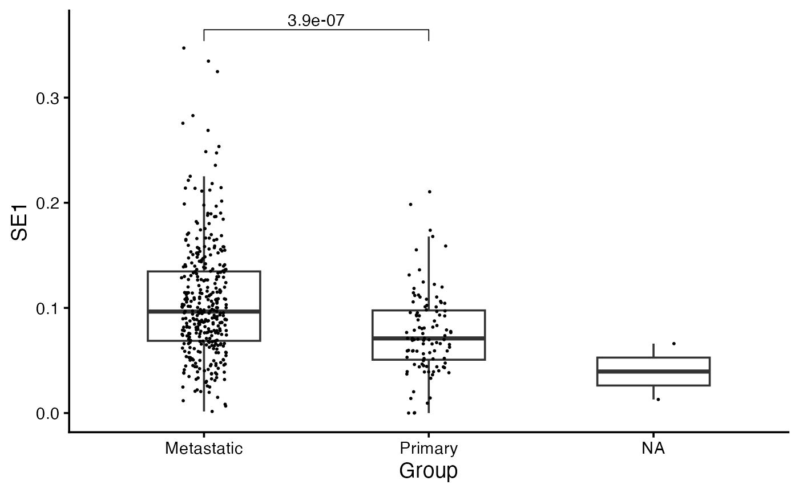
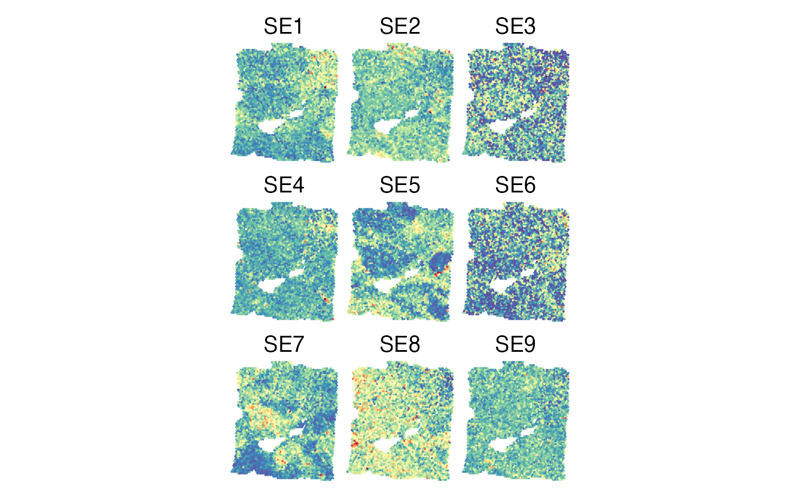

Inferring Spatial Ecotype Abundances from Bulk Gene Expression Data
Source:vignettes/Recovery_Bulk.Rmd
Recovery_Bulk.RmdOverview
In this tutorial, we will demonstrate how to infer spatial ecotype (SE) abundances from bulk gene expression profiles, including bulk RNA-seq and Visium spatial transcriptomics.
First load required packages for this vignette
Inferring SE levels from bulk RNA-seq data
We will start with the SE deconvolution from bulk RNA-seq. We will use bulk RNA-seq data from TCGA melanoma (SKCM) samples for demonstration. The gene expression matrix is available at SKCM_RNASeqV2.geneExp.tsv, which is a Transcripts Per Million (TPM) matrix obtained from the PanCanAtlas.
Loading bulk expression of TCGA melanoma samples
bulkdata <- fread("https://spatialecotyper.stanford.edu/inc/inc.public.vignettes.php?file=SKCM_RNASeqV2.geneExp.tsv", sep = "\t", data.table = FALSE)
rownames(bulkdata) <- bulkdata[, 1] ## Set the first column as row names
bulkdata <- bulkdata[, -1] ## Drop the first column
head(bulkdata[, 1:5]) ## TPM matrix## TCGA.3N.A9WB.06 TCGA.3N.A9WC.06 TCGA.3N.A9WD.06 TCGA.BF.A1PU.01
## A1BG 381.0660 195.182 360.8790 176.3990
## A1CF 0.0000 0.000 0.7092 0.0000
## A2BP1 0.0000 0.000 6.3830 1.2987
## A2LD1 250.1980 160.755 97.1986 163.2340
## A2M 2209.5200 169237.000 18257.9000 6716.4500
## A2ML1 7.2698 0.000 0.0000 7.7922
## TCGA.BF.A1PV.01
## A1BG 216.8470
## A1CF 0.0000
## A2BP1 0.0000
## A2LD1 60.8727
## A2M 1740.5800
## A2ML1 0.5977SE deconvolution
The DeconvoluteSE function infers SE abundances in bulk tissue samples. Users can either use the default model, which estimates the abundances of predefined SEs, or apply a custom model to infer the abundance of newly defined SEs from bulk gene expression data. Before prediction, DeconvoluteSE automatically applies a log₂ transformation (if the maximum value exceeds 80) and standardizes the data so that each gene has a mean of 0 and a unit variance. To ensure reliable standardization, we recommend a minimum of 20 samples. For smaller datasets, we recommend to combine them with a larger dataset for normalization prior to running DeconvoluteSE.
The default model is trained on pseudobulk gene expression data and predicts the abundances of nine predefined SEs along with a nonSE group, which includes cancer cells and cells not associated with any SEs. The predicted SE and nonSE abundances for each sample sum to 1, making them comparable across samples.
Using default model
sefracs <- DeconvoluteSE(bulkdata, scale = TRUE)
head(sefracs)## NonSE SE1 SE2 SE3 SE4
## TCGA.3N.A9WB.06 0.19380234 0.05372667 0.16735600 0.12581663 0.07216666
## TCGA.3N.A9WC.06 0.05293689 0.13901340 0.08427617 0.08372047 0.04243859
## TCGA.3N.A9WD.06 0.27200075 0.17114795 0.06288761 0.05641549 0.10166721
## TCGA.BF.A1PU.01 0.16899510 0.13618971 0.06501306 0.09269615 0.17313296
## TCGA.BF.A1PV.01 0.12078283 0.06921834 0.05970319 0.16813008 0.11059648
## TCGA.BF.A1PX.01 0.21398415 0.04019509 0.08906215 0.04499893 0.08561680
## SE5 SE6 SE7 SE8 SE9
## TCGA.3N.A9WB.06 0.06884572 6.495692e-02 4.610809e-03 0.16471168 0.08400658
## TCGA.3N.A9WC.06 0.05623098 6.781589e-03 3.162253e-01 0.15964259 0.05873404
## TCGA.3N.A9WD.06 0.02720647 8.345475e-02 9.239064e-02 0.07760029 0.05522884
## TCGA.BF.A1PU.01 0.13404194 3.330034e-16 3.330034e-16 0.02543647 0.20449461
## TCGA.BF.A1PV.01 0.14669963 1.677658e-01 1.260194e-03 0.06961553 0.08622790
## TCGA.BF.A1PX.01 0.09930790 7.771710e-02 1.239738e-01 0.12590726 0.09923685Note: If your data are already standardized to have
zero mean and unit variance per gene, set
scale = FALSE.
Using custom model
After identifying SEs using SpatialEcoTyper or MultiSpatialEcoTyper, users can develop a Non-Negative Matrix Factorization (NMF) model to deconvolve SEs from bulk tissue samples, following the Tutorial 7.
Deconvolution
Users can train an NMF model for SE deconvolution following the
tutorial above. After that, the new model can be used for SE
deconvolution by specifying the W parameter:
# Do not run; replace new_model
sefracs <- DeconvoluteSE(bulkdata, W = new_model)Visualizing SE abundances across samples
library(grid)
HeatmapView(sefracs, breaks = c(0, 0.15, 0.3),
show_row_names = FALSE, cluster_rows = TRUE)
Inferring SE levels from Visium data
Here, we will demonstrate how to infer SE levels in Visium spots using a breast cancer sample. The expression data can be accessed from: Visium_Breast_Cancer_filtered_feature_bc_matrix.h5, which was obtained from 10x Genomics datasets.
Loading data
First, download and load the expression data into R.
if(!"hdf5r" %in% installed.packages()) BiocManager::install("hdf5r")
require("hdf5r")
url <- "https://spatialecotyper.stanford.edu/inc/inc.public.vignettes.php?file=Visium_Breast_Cancer_filtered_feature_bc_matrix.h5"
download.file(url, destfile = "Visium_Breast_Cancer_filtered_feature_bc_matrix.h5", mode = "wb")
# Load Visium gene expression matrix. Rows are genes, columns are spots.
visiumdat <- Read10X_h5("Visium_Breast_Cancer_filtered_feature_bc_matrix.h5")
# normalize the expression data
visiumdat <- NormalizeData(visiumdat)
meta <- read.csv("https://spatialecotyper.stanford.edu/inc/inc.public.vignettes.php?file=Visium_Breast_Cancer_tissue_positions_list.csv",
header = FALSE, row.names = 1)
colnames(meta) <- c("tissue", "row", "col", "imagerow", "imagecol")
meta <- meta[colnames(visiumdat), ]
head(meta)## tissue row col imagerow imagecol
## AAACAAGTATCTCCCA-1 1 50 102 15632 17782
## AAACACCAATAACTGC-1 1 59 19 17734 6447
## AAACAGAGCGACTCCT-1 1 14 94 7079 16716
## AAACAGGGTCTATATT-1 1 47 13 14882 5637
## AAACAGTGTTCCTGGG-1 1 73 43 21069 9712
## AAACATTTCCCGGATT-1 1 61 97 18242 17091SE deconvolution
The process of SE deconvolution for Visium data is the same as for bulk RNA-seq data described above, using the DeconvoluteSE function.
sefracs <- DeconvoluteSE(visiumdat, scale = TRUE)
head(sefracs)## NonSE SE1 SE2 SE3 SE4
## AAACAAGTATCTCCCA-1 0.05232099 0.05041149 0.10012837 0.07571055 0.12156545
## AAACACCAATAACTGC-1 0.18364314 0.09826717 0.09954508 0.15312700 0.17172335
## AAACAGAGCGACTCCT-1 0.07892363 0.18628624 0.05614935 0.14666072 0.08793592
## AAACAGGGTCTATATT-1 0.01745807 0.10309868 0.06961478 0.17559241 0.05575361
## AAACAGTGTTCCTGGG-1 0.15862994 0.02678254 0.23718907 0.01112368 0.08659772
## AAACATTTCCCGGATT-1 0.23539977 0.08190824 0.10742201 0.10051098 0.04179825
## SE5 SE6 SE7 SE8 SE9
## AAACAAGTATCTCCCA-1 0.23954159 0.03325773 0.094210882 0.12824410 0.10460885
## AAACACCAATAACTGC-1 0.04421240 0.03536673 0.032214566 0.07797078 0.10392979
## AAACAGAGCGACTCCT-1 0.05905418 0.08619887 0.191601732 0.02817472 0.07901464
## AAACAGGGTCTATATT-1 0.06850337 0.10667711 0.160825782 0.19010269 0.05237349
## AAACAGTGTTCCTGGG-1 0.24190862 0.07533104 0.007060598 0.06890341 0.08647337
## AAACATTTCCCGGATT-1 0.06918666 0.17898566 0.041112012 0.06446834 0.07920809Visualizing SE abundances across Visium spots
The SpatialView function can be used to visualize SE levels across Visium spots.
library(ggplot2)
## attach the spatial coordinates to the matrix for visualization
gg = cbind(sefracs, meta[match(rownames(sefracs), rownames(meta)), ])
gg = as.data.frame(gg)
SpatialView(gg, by = "SE7", X = "imagerow", Y = "imagecol", pt.size = 2) +
scale_color_gradientn(colors = rev(RColorBrewer::brewer.pal(11, "Spectral"))) +
coord_fixed()
Aggregating SE abundances across Visium spots
To compute sample-level SE abundances, Spatial EcoTyper calculates a weighted average of SE abundances across all Visium spots, where each spot is weighted by its inferred number of cells. The resulting SE abundances are then normalized to sum to 1.
ncells = InferNCells(visiumdat)
se_abundance = colSums(sefracs * ncells)
se_abundance = se_abundance / sum(se_abundance)
se_abundance## NonSE SE1 SE2 SE3 SE4 SE5 SE6
## 0.14040316 0.10273022 0.10877979 0.07961907 0.08949085 0.10648323 0.06536729
## SE7 SE8 SE9
## 0.10937720 0.09877262 0.09897657Session info
The session info allows users to replicate the exact environment and identify potential discrepancies in package versions or configurations that might be causing problems.
## R version 4.4.1 (2024-06-14)
## Platform: aarch64-apple-darwin20
## Running under: macOS 26.5.1
##
## Matrix products: default
## BLAS: /Library/Frameworks/R.framework/Versions/4.4-arm64/Resources/lib/libRblas.0.dylib
## LAPACK: /Library/Frameworks/R.framework/Versions/4.4-arm64/Resources/lib/libRlapack.dylib; LAPACK version 3.12.0
##
## locale:
## [1] en_US.UTF-8/en_US.UTF-8/en_US.UTF-8/C/en_US.UTF-8/en_US.UTF-8
##
## time zone: America/Los_Angeles
## tzcode source: internal
##
## attached base packages:
## [1] grid parallel stats graphics grDevices utils datasets
## [8] methods base
##
## other attached packages:
## [1] ggplot2_3.5.1 hdf5r_1.3.11 SpatialEcoTyper_1.0.3
## [4] NMF_0.28 Biobase_2.64.0 BiocGenerics_0.50.0
## [7] cluster_2.1.6 rngtools_1.5.2 registry_0.5-1
## [10] RANN_2.6.2 Matrix_1.7-0 data.table_1.16.0
## [13] Seurat_5.1.0 SeuratObject_5.0.2 sp_2.1-4
##
## loaded via a namespace (and not attached):
## [1] RcppAnnoy_0.0.22 splines_4.4.1 later_1.3.2
## [4] tibble_3.2.1 polyclip_1.10-7 fastDummies_1.7.4
## [7] lifecycle_1.0.4 sf_1.1-0 doParallel_1.0.17
## [10] globals_0.16.3 lattice_0.22-6 MASS_7.3-60.2
## [13] magrittr_2.0.3 plotly_4.10.4 sass_0.4.9
## [16] rmarkdown_2.28 jquerylib_0.1.4 yaml_2.3.10
## [19] httpuv_1.6.15 sctransform_0.4.1 spam_2.10-0
## [22] spatstat.sparse_3.1-0 reticulate_1.39.0 cowplot_1.1.3
## [25] pbapply_1.7-2 DBI_1.3.0 RColorBrewer_1.1-3
## [28] abind_1.4-5 Rtsne_0.17 purrr_1.0.2
## [31] circlize_0.4.16 IRanges_2.38.1 S4Vectors_0.42.1
## [34] ggrepel_0.9.6 irlba_2.3.5.1 listenv_0.9.1
## [37] spatstat.utils_3.1-0 units_1.0-1 goftest_1.2-3
## [40] RSpectra_0.16-2 spatstat.random_3.3-1 fitdistrplus_1.2-1
## [43] parallelly_1.38.0 pkgdown_2.1.0 leiden_0.4.3.1
## [46] codetools_0.2-20 tidyselect_1.2.1 shape_1.4.6.1
## [49] farver_2.1.2 matrixStats_1.4.1 stats4_4.4.1
## [52] spatstat.explore_3.3-2 jsonlite_1.8.8 GetoptLong_1.0.5
## [55] e1071_1.7-16 progressr_0.14.0 ggridges_0.5.6
## [58] survival_3.6-4 iterators_1.0.14 systemfonts_1.1.0
## [61] foreach_1.5.2 tools_4.4.1 ragg_1.3.2
## [64] ica_1.0-3 Rcpp_1.0.13 glue_1.7.0
## [67] gridExtra_2.3 xfun_0.52 dplyr_1.1.4
## [70] withr_3.0.1 BiocManager_1.30.25 fastmap_1.2.0
## [73] boot_1.3-30 fansi_1.0.6 spData_2.3.4
## [76] digest_0.6.37 R6_2.5.1 mime_0.12
## [79] wk_0.9.5 textshaping_0.4.0 colorspace_2.1-1
## [82] scattermore_1.2 tensor_1.5 spatstat.data_3.1-2
## [85] utf8_1.2.4 tidyr_1.3.1 generics_0.1.3
## [88] class_7.3-22 httr_1.4.7 htmlwidgets_1.6.4
## [91] spdep_1.4-2 uwot_0.2.2 pkgconfig_2.0.3
## [94] gtable_0.3.5 ComplexHeatmap_2.20.0 lmtest_0.9-40
## [97] htmltools_0.5.8.1 dotCall64_1.1-1 clue_0.3-65
## [100] scales_1.3.0 png_0.1-8 spatstat.univar_3.0-1
## [103] knitr_1.48 rstudioapi_0.16.0 reshape2_1.4.4
## [106] rjson_0.2.22 nlme_3.1-164 proxy_0.4-27
## [109] cachem_1.1.0 zoo_1.8-12 GlobalOptions_0.1.2
## [112] stringr_1.5.1 KernSmooth_2.23-24 miniUI_0.1.1.1
## [115] s2_1.1.9 desc_1.4.3 pillar_1.9.0
## [118] vctrs_0.6.5 promises_1.3.0 xtable_1.8-4
## [121] evaluate_0.24.0 magick_2.8.5 cli_3.6.3
## [124] compiler_4.4.1 rlang_1.1.4 crayon_1.5.3
## [127] future.apply_1.11.2 labeling_0.4.3 classInt_0.4-11
## [130] plyr_1.8.9 fs_1.6.4 stringi_1.8.4
## [133] viridisLite_0.4.2 deldir_2.0-4 gridBase_0.4-7
## [136] munsell_0.5.1 lazyeval_0.2.2 spatstat.geom_3.3-2
## [139] RcppHNSW_0.6.0 patchwork_1.2.0 bit64_4.5.2
## [142] future_1.34.0 shiny_1.9.1 highr_0.11
## [145] ROCR_1.0-11 igraph_2.0.3 bslib_0.8.0
## [148] bit_4.5.0